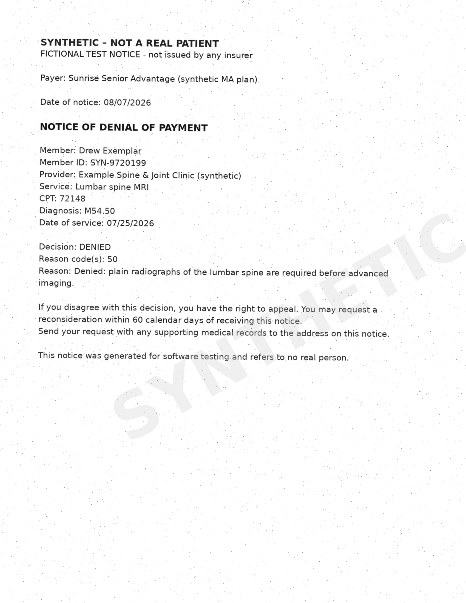
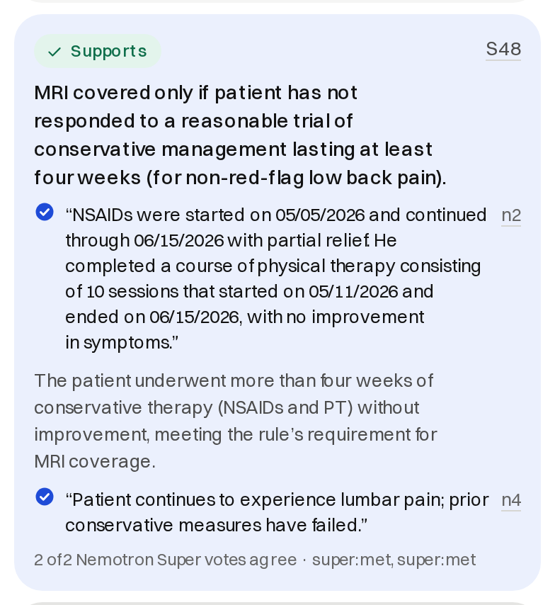
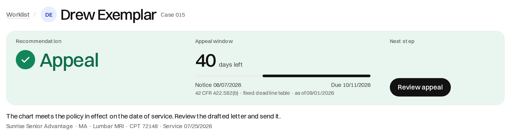
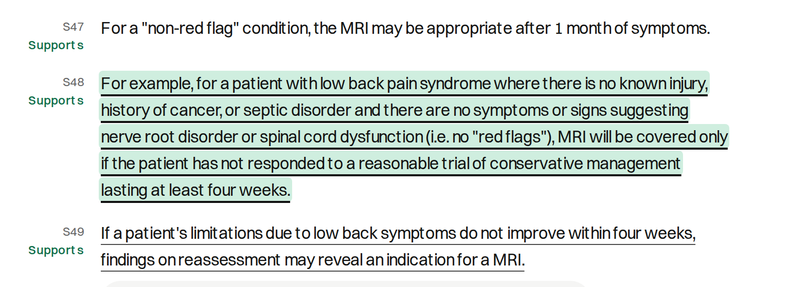
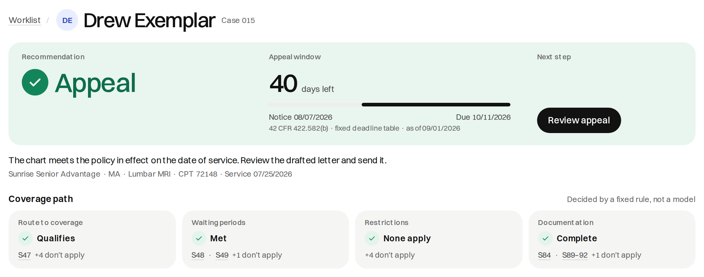
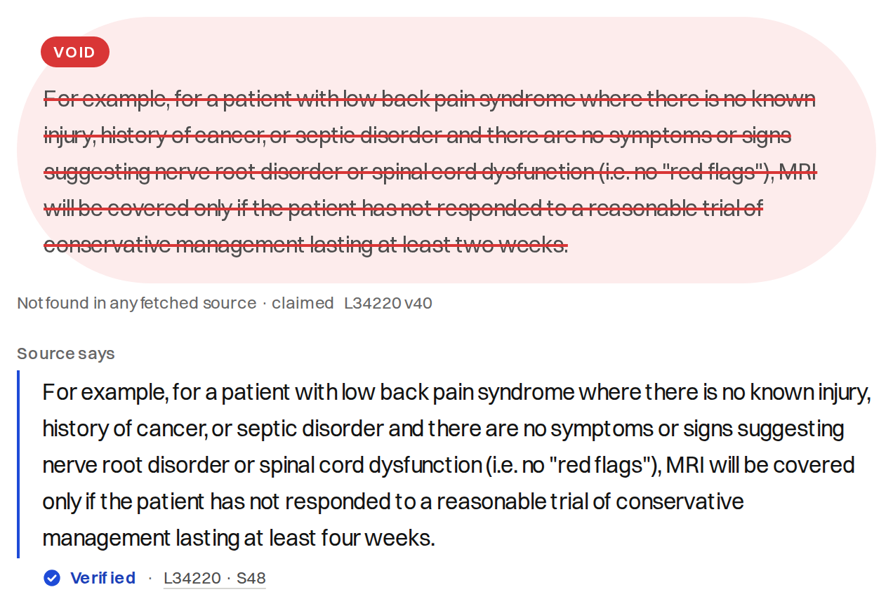
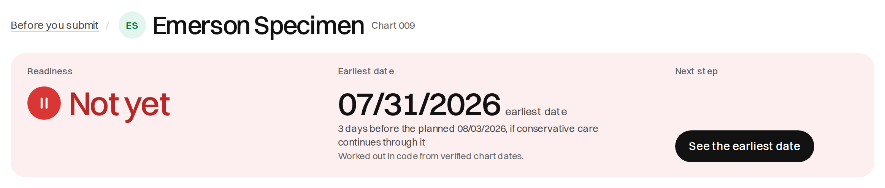
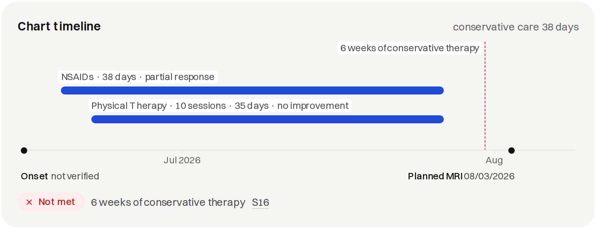

Payers check every MRI order criterion by criterion. Now a three-doctor practice can too, with every quote verified word for word.
of appealed Medicare Advantage prior-auth denials were overturned in 2024 (KFF)
Road House
Aman Bihari, Bhawna
NVIDIA Nemotron on Nebius Token Factory · Tavily
quotes in the appeal verified against fetched text
of appealed Medicare Advantage prior-authorization denials were overturned, partly or fully, in 2024 [1]
of those denials were ever appealed [1]
of 250 sampled MA prior-auth denials met Medicare rules; some plans demanded an x-ray first [2]
“Denied: plain radiographs of the lumbar spine are required before advanced imaging.”
Drew Exemplar (synthetic) · Sunrise Senior Advantage (synthetic MA plan) · lumbar MRI, CPT 72148 · 07/25/2026 · 60 days from presumed receipt to appeal
Read and route
Nemotron 3.5 Super-VL reads the fax. A reason-code table routes it, with no model.

Check every rule
The policy in force on the service date, cut into rules. Two Super votes each; Ultra breaks ties.

Decide and draft
A fixed rule decides; a table sets the deadline. Ultra drafts; export locks unless every quote matches.

The CMS Coverage API keeps every version: a 07/25/2026 service gets LCD L34220 v40. Aetna's bulletin is found at runtime with Tavily. Code numbers every sentence; Nemotron Super only picks which are rules, so nothing is paraphrased.
of 410 rule checks: both votes agreed
went to Ultra to break a tie


Every quote must match text fetched for the case, word for word. Here “four weeks” was edited to “two weeks”; the tool shows what the source really says.
quotes in the real letter match their source. A person still sends it.

recommendations right with two Super samples per rule and an Ultra referee, about five cents a case
| Super ×2 + Ultra | Nano, one sample | |
|---|---|---|
| Recommendation | 30 / 30 | 16 / 29 |
| Hand-labeled rule statuses | 138 / 138 | 119 / 131 |
| Mean cost per case | $0.048 | $0.010 |
Our own cases and answer key; prompts were tuned on them. This shows the pipeline behaves as designed, not accuracy on real charts. Model and sample count change together.


Aetna needs six weeks of therapy and the chart shows 38 days, so code dates it 07/31/2026, three days before the planned scan. A nightly watch flags any policy whose wording changed.
Super-VL
reads the scanned fax
Nano
extracts chart facts; reads text notices in 0.4 s
Super
picks rule sentences, votes twice per rule
Ultra
breaks ties, drafts and revises the letter
Nebius Token Factory
one endpoint, JSON-schema output checked in code
Tavily
finds Aetna's current bulletin at runtime
Spend caps
every call checked against a hard cap first
Never sends anything.
A person reviews, edits and sends every letter.
Never invents a quote or a deadline.
Export locks until every quote matches; deadlines come from a fixed table (42 CFR 422.582(b), 405.942(a); 45 CFR 147.136(b); 29 CFR 2560.503-1).
Never uses real patient data.
All cases are synthetic; eviCore, Carelon and ACR text is never sent to a model.
Never guesses outside its scope.
Lumbar MRI (CPT 72148 tested), Medicare LCD L34220 in Noridian states, Aetna CPB 0236. Other payers are refused.
denial-auditor.ttvcj372k5tgj.us-east-1.cs.amazonlightsail.com
github.com/codebreaker32/denial-auditor · Apache-2.0